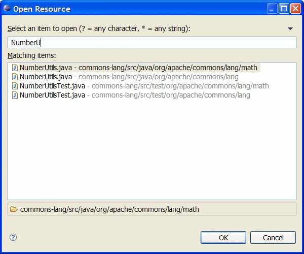
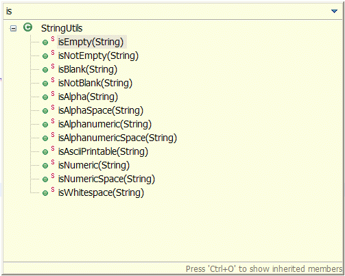
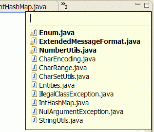
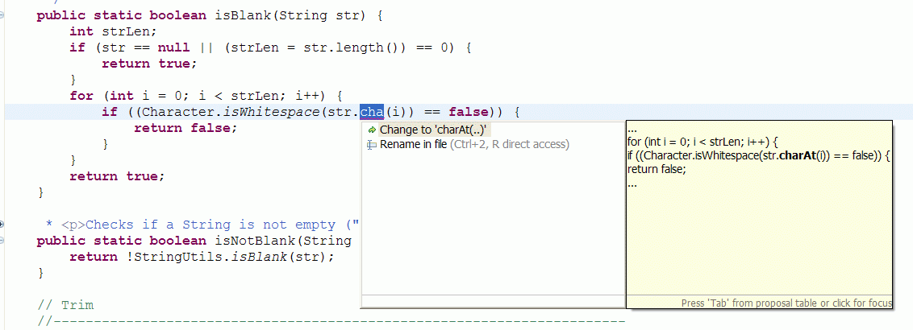

Eclipse10个快捷方式
1. ctrl+shift+r：打开资源
这可能是所有快捷键组合中最省时间的了。这组快捷键可以让你打开你的工作区中任何一个文件，而你只需要按下文件名或mask名中的前几个字母，比如applic*.xml。美中不足的是这组快捷键并非在所有视图下都能用。
 http://new.51cto.com/files/uploadimg/20090520/1658000.gif
2. ctrl+o：快速outline
如果想要查看当前类的方法或某个特定方法，但又不想把代码拉上拉下，也不想使用查找功能的话，就用ctrl+o吧。它可以列出当前类中的所有方法及属性，你只需输入你想要查询的方法名，点击enter就能够直接跳转至你想去的位置。
 http://new.51cto.com/files/uploadimg/20090520/1658001.gif
3. ctrl+e：快速转换编辑器
这组快捷键将帮助你在打开的编辑器之间浏览。使用ctrl+page down或ctrl+page up可以浏览前后的选项卡，但是在很多文件打开的状态下，ctrl+e会更加有效率。
 http://new.51cto.com/files/uploadimg/20090520/1658002.gif
4. ctrl+2，L：为本地变量赋值
开发过程中，我常常先编写方法，如Calendar.getInstance()，然后通过ctrl+2快捷键将方法的计算结果赋值于一个本地变量之上。这样我节省了输入类名，变量名以及导入声明的时间。Ctrl+F的效果类似，不过效果是把方法的计算结果赋值于类中的域。
5. alt+shift+r：重命名
重命名属性及方法在几年前还是个很麻烦的事，需要大量使用搜索及替换，以至于代码变得零零散散的。今天的Java IDE提供源码处理功能，Eclipse也是一样。现在，变量和方法的重命名变得十分简单，你会习惯于在每次出现更好替代名称的时候都做一次重命名。要使用这个功能，将鼠标移动至属性名或方法名上，按下alt+shift+r，输入新名称并点击回车。就此完成。如果你重命名的是类中的一个属性，你可以点击alt+shift+r两次，这会呼叫出源码处理对话框，可以实现get及set方法的自动重命名。
6. alt+shift+l以及alt+shift+m：提取本地变量及方法
源码处理还包括从大块的代码中提取变量和方法的功能。比如，要从一个string创建一个常量，那么就选定文本并按下alt+shift+l即可。如果同一个string在同一类中的别处出现，它会被自动替换。方法提取也是个非常方便的功能。将大方法分解成较小的、充分定义的方法会极大的减少复杂度，并提升代码的可测试性。
7. shift+enter及ctrl+shift+enter
Shift+enter在当前行之下创建一个空白行，与光标是否在行末无关。Ctrl+shift+enter则在当前行之前插入空白行。
8. Alt+方向键
这也是个节省时间的法宝。这个组合将当前行的内容往上或下移动。在try/catch部分，这个快捷方式尤其好使。
9. ctrl+m
大显示屏幕能够提高工作效率是大家都知道的。Ctrl+m是编辑器窗口最大化的快捷键。
10. ctrl+.及ctrl+1：下一个错误及快速修改
ctrl+.将光标移动至当前文件中的下一个报错处或警告处。这组快捷键我一般与ctrl+1一并使用，即修改建议的快捷键。新版Eclipse的修改建议做的很不错，可以帮你解决很多问题，如方法中的缺失参数，throw/catch exception，未执行的方法等等。

http://new.51cto.com/files/uploadimg/20090520/1658003.gif
更多快捷键组合可在Eclipse按下ctrl+shift+L查看。